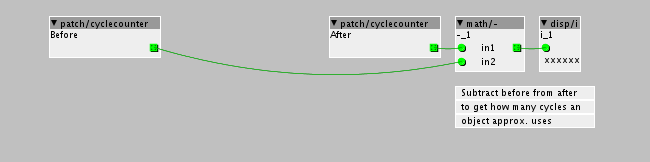

I made it into an object and saved it to the library.
It is called jaffa/scale/drawscale

I made it into an object and saved it to the library.
It is called jaffa/scale/drawscale
@jaffasplaffa - how are you counting cycles?
The bit of code I added definitely doesn’t consume much CPU, but it should also vary a bit depending on specific conditions.
Interestingly, I don’t know what it would be used for.
Edit: I just looked at what jaffasplaffa checked in, and I see what it does, but...
The idea of quantizing Note numbers seems unuseful. This is different from quantizing pitch, as in Autotune.
Like this 

Insert the object that you want to check how many cycles uses between the "before" and "after" object.
It subtracts "before" from "after" = how many cycles used to process the object (approximately).
I’m pretty sure you’re misinterpreting the result. I get 4 when there is no object being timed, or when the objects being timed are not on the same level.
When they are on the same level, I get 32 best case, when all notes are ON. And higher numbers depending on how far the loops go to find nearest Higher or lower.
I also wonder what the units are? Probably ticks, which aren’t the same as CPU cycles.
Finally, DSP load is just another way of expressing how much CPU is being used.
OH, I might have misinterpreted it. I just looked at how other people did it and did the same. Like for example as @toneburst does here:
But yes after rechecking, I see that when all notes are on it uses 32 cycles and uses more with less notes on, when changing the input value.
From the helpfile for the cycle object:
"The cyclecounter object outputs a counter that increments on every cpu clock cycle"
"This can be used to measure the number of cpu cycles consumed in objects"
So I was just repeating what I saw there.
But i think the object is still good
If you want to make sure that any note you send to the object is "rounded" to stay within a certain musical scale, before sending the note to the pitch inlet of an oscillator. It makes it a lot easier to make something musical/harmonic. If you have a bass and a melody and a pad sound, send any pitch modulation through this object and the 3 instruments pitch, should stay within the same scale and therefor be more musical.
Also if one is not that good and playing keyboard and is not that good at music theory, this object works magic, it will take care of the everything pitch related. You can basically bang any key of the keyboard and it will sound like you actually know what you are doing, because everything will be in scale 
I could also just learn to play keyboard, but no need for that with this object, hehe
Yes, I understand what you mean. I'm just surprised anybody would want it. This isn't the same as quantizing tempo and duration, or pitch (a la Autotune).
hey guys,
@tele_player if i understand @jaffasplaffa's idea right, there is a lot of use cases for this, and similar technology is implemented in a bunch of hardware controllers and software. this basically is just a "snap to scale" function, right? avoiding any "wrong"/off-scale midi notes by pushing them to the nearest enabled neighbour.
aside from enabling one to play keyboard in scale while blindfolded and/or retarded, one of the biggest usee cases of this is w generative music, arpeggiators, sequencers, allowing you to transpose a sequence while staying in key.
now all i wonder, doesn't harmony/note scale do the same thing?
The keyboard example seems unlikely to me - wrong notes played by a clumsy keyboard player probably won't sound better just being pushed to the nearest note in the scale.
I suppose in some sequenced or generated music, it might be interesting to shift things to the nearest note in a scale.
Not useful to me, but sure, somebody might want to use it.
of course they will sound better, what do you mean? any unplanned out of scale note will naturally sound more pleasant when snapped into scale. aside from this being my personal opinion, there's thousands of "players" using these features daily, most prominently as implemented on all the native instruments kontrol keyboards.
that plus the obvious transposition of arpeggios and sequences makes "snap to scale" a widely known and used technology with results you can't really achieve any other way.
Yes, true, I am also using it for generative music. Which is what I make the most.
And also true, that a lot of synths has this feature, like for example Nord G2, which has an object that does the exact same.
Yes it is in the same ball park, but it handles notes differently.
Let's say we have 3 notes turned on in both the harmony/note object and my drawscale object. The notes turned on are 0,3,7.
For harmony/scale the range quickly get very high. If you for example send the object a value of 1, you will get an output of 3. If you send it a value of 2, you will get a value of 7. But if you send it a value of 3, which is outside the scale, it will play the first note of the scale, but an octave higher, a value of 12. If you send it a value of 4, you wil get the second value form the scale, but an octave higher, which would be 15.
So you seen the range of the scaled notes can very quickly get into a high range, with notes ranging of several octave. As soon as you go outside the number of active notes in the scale, which is 3, it will push the note and octave up.
For the drawscale object, if we send it a value of 2, the value will be rounded to closest value, which is 3. If you send it a value of 9, it will output a value of 7, cause that is the closest value in the scale.
The thing here is that the scale object will ONLY go into next octave if you actually send it a value of 12.
It is a bit hard to explain. But I think you should load both objects and see how they behave and choose the one you like.
I find this new one much more to my taste, cause the range doesn't go crazy. If you send it values between 0-11 it will ALWAYS stay within the samle octave, no matter how many notes is active.
For the harmony version, if you only have a few notes on, the range can quickly go into several octaves, if you send it value between 0-11.
But yeah, try loading them up next to each other and test them side by side and I am sure you will notice the difference between the two objects and how they handle notes and octaves
Another example, based on the 0-11 numbers. If we send the objects values from 0-11 to each of the objects and the notes that are on in each object are:
00,03,07
And the values send to the object are:
00,01,02,03,04,05,06,07,08,09,10,11
Harmony object resulting note:
00,03,07,12,15,19,24,27,31,36,39,43
Drawscale object resulting note:
00,00,03,03,03,07,07,07,07,12,12,12
Something like that, didn't test it, but the result will be very close to the above. So you see there is a huge difference on how they handle notes and octaves. Harmony objects range can very quickly "explode", especially when only a few notes are turned on. Drawscales range doesn't "explode", it is more steady and doesn't vary a lot, even with only few notes turned on.
well with practice you can.
i am with @tele_player here. to me all those snap to scale tunes sound pretty boring and uniform. you can tell quite easily that they were not played by a human. also playing a note in scale does not guarantee a nice sound. depends on the beat your on, the tempo, the underlying chord, the octave and the preceeding and following melody notes...i can make a c-sharp sound good in a c-maj7 chord...
The object is just another option to the library. Everyone is free to use scaling or not using scaling. I am not judging anyone. But I do make mostly generative music, where it comes it handy. If other people work in different ways, all power to them
And I appreciate @tele_player's help even though he doesn't find it too useful
you guys are clearly missing the point of these algorithms. of course nobody will become a good keyboard player. of course the scales are limited and we all know the most interesting music happens when you break the rules in a smart way, ie. weirdo jazz voicings.
your arguments kinda sound like the grumpy old "whoever needs autotune shouldn't even sing" musicians, failing to see the abundance of talent and great creative ideas autotune enabled, and also all the amazing singers that use autotune simply as a stylistic tool (ie t-pain).
you fail to see the advantages of this scale snapping when transposing sequences, or just shift incoming midi by a minor third, and still stay in scale, automatically harmonizing midi etc etc. as i said before this technology is in daily use by professional musicians and producers worldwide.
btw the ableton "scale" plugin offers a pretty neat implementation that could be referenced for future versions.
While I have no interest in generative music, this is an interesting thread to read cause at the end of the day it all boils down to one thing; pitch and messing around with it.
I don't listen to generative music personally (unless accidentally I suppose), but I generally don't have a problem with it as long as the artist is very clear about it being generative, and about it not being composed from the mind of a human.
Regards the auto-tune stuff; I think it all started getting out of hand after Cher released "Believe", which personally I like, and it is fair to say that the auto-tune is used in Believe as an "artistic tool" as Weasel puts it.
That said, I cannot stress enough how appalling I think modern chart music is these days because of it's use. They've been building a new house across the road from me for what must be around five months now. The builders have one of those builders boomboxes, and all that ever seems to come out of it all bloody day long, is chart music that is pretty much end-to-end auto-tune. The worst are those "Boy Bands", it's like listening to a synthesizer sing, it just doesn't sound human or in the least bit likeable to me.
I'm not old, but I feel old when I say that I feel so damn sorry for the youth of today having to listen to that. Some of them have the brains to break from the crowd and you'll often see them commenting on YouTube videos with music from the 80s etc. The amount of times I've seen comments that they hate modern music and wish they were around in the 80s, is absolutely mind-blowing.
So for me, Auto-tune has become the unfortunate cancer that eats away at musical-sounding vocals, and far too often is used to hide the fact that the artist couldn't sing through a track to any acceptable standard, even if their life depended on it!
This is a track where auto-tune is used stylistically, it's what I would call a genuine artistic use of the tool, but sadly, most are not.
{kind=link}